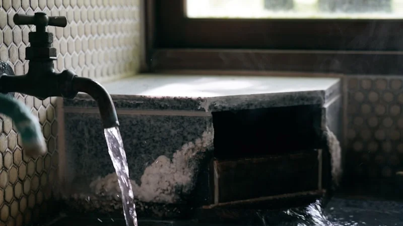

「朝から体が重い…」は冷えと自律神経のサイン。東洋医学に学ぶ、心と体を芯から温める3つのセルフ養生
2026.06.22

「しっかり眠ったはずなのに、朝起きた瞬間からすでに体が重だるい」「手足の先が氷のように冷たくて、夜なかなか寝付けない」……。そんな日々の不調に悩んでいませんか？「年のせいかな」「最近忙しいから」と見過ごしてしまいがちですが、実はその不調、冷えからくる「自律神経の乱れ」が原因かもしれません。特に季節の変わり目やエアコンによる寒暖差がある時期は、体は私たちが思う以上にストレスを感じています。まずは自分の状態を正しく理解し、本来の「心地よいわたし」を取り戻すための一歩を踏み出してみましょう。
なぜ「冷え」と「だるさ」は同時にやってくるのか？
なぜ、冷えとだるさは同時にやってくるのでしょうか。その理由は、自律神経の働きと血流の密接な関係にあります。
ストレスや寒さにさらされると、体は身を守るために交感神経を過剰に優位にします。すると、血管が収縮し、特に末梢血管に血液が届きにくくなります。これが「冷え」のメカニズムです。血流が滞ると、細胞に必要な酸素や栄養素が十分に行き届かなくなるだけでなく、疲労物質や老廃物が体内に蓄積されてしまいます。この「血の巡りの悪さ」こそが、慢性的な疲労感や重だるさの正体なのです。
東洋医学では、この状態を「気（き）・血（けつ）・水（すい）」のバランスが崩れた状態と考えます。特に、生命エネルギーである「気」の巡りが滞る「気滞（きたい）」や、血液が滞る「瘀血（おけつ）」が起きると、体の一部に熱がこもる一方で手足は冷え切る「冷えのぼせ」を招きやすくなります。この滞りをスムーズに流し、体を芯から温めることが、不調を根本から解決するための鍵となります。
明日からすぐできる、心と体を温めるセルフケア3選
1. 万能の温活ツボ「三陰交（さんいんこう）」のセルフ指圧
女性の健康や血流改善に欠かせないのが、足首にある「三陰交」というツボです。
【手順】
内くるぶしの最も高い場所から、指幅4本分（人差し指から小指まで）上がった、すねの骨の後ろ側のくぼみにあります。ここを親指の腹で、気持ちいいと感じる強さで、ゆっくり3秒かけて押し、3秒かけて離します。これを左右5回ずつ繰り返します。
【なぜ効くのか】
三陰交は、東洋医学において水分代謝や消化吸収、生殖機能を司る「脾・肝・腎」の3つの経絡が交わる極めて重要なポイントです。ここを刺激することで、下半身の冷えを解消し、骨盤内の血流を促進する効果があります。これにより自律神経が整い、質の良い睡眠や冷えの改善につながります。
実践のヒント
お風呂上がりなどの体全体が温まっている時に行うと、より効果的です。
2. 自律神経のスイッチを切り替える「4・7・8呼吸法」
呼吸は、自律神経を自分の意志で直接コントロールできる唯一の方法です。
【手順】
1. まず口から息を完全に吐ききります。
2. 次に、鼻からゆっくりと息を吸いながら、頭の中で4秒数えます。
3. 息を止め、7秒間数えます。
4. 最後に、口から「ふぅー」と音を立てながら、8秒かけてゆっくりと息を吐き出します。これを4サイクル繰り返します。
【なぜ効くのか】
息を吐く時間を意識的に長くすることで、副交感神経が急激に優位になり、血管が拡張して手足の先まで一気に血流が促されます。また、息を止めることで一時的に血液中の二酸化炭素濃度が上がり、呼吸を再開した際に酸素の吸収効率が高まるため、全身の細胞が活性化して疲労回復が早まります。

3. 首の後ろを温めるピンポイント温熱ケア
「首」は、太い血管が皮膚のすぐ近くを通っている、温めの最も重要な急所です。
【手順】
就寝前に、濡らしたタオルを電子レンジ（500Wで約1分）で温め、首の後ろに当てて3分間温めます。特に首の後ろにある「大椎（だいつい）」というツボ（首を前に曲げた時に、最も大きく飛び出る骨のすぐ下）を狙って温めてください。
【なぜ効くのか】
大椎は「陽の気が集まる場所」とされ、ここを温めることで全身の血管が拡張し、一気に体がポカポカと温まります。また、首元には自律神経のセンサーが存在するため、首の後ろを温めることで、脳がリラックス状態を認識し、自律神経の緊張が即座に解きほぐされます。
実践のヒント
外出時はマフラーやハイネックを着用し、常に首元を冷風から守るだけでも、自律神経への負担を大幅に減らすことができます。
今日から始める、わたしを労わる時間
朝の重だるさや手足の冷え。これらはすべて、忙しい日々の中で「少し立ち止まって」という、あなたの心と体からの大切なメッセージです。今回ご紹介したツボ押し、呼吸法、温熱ケアは、どれも特別な道具を使わずに今すぐ始められる養生法です。まずは今日の夜、お布団に入る前に呼吸法を1回試すところから始めてみませんか？
しかし、仕事や家事に追われ、「セルフケアをしなきゃ」と思うこと自体がストレスになってしまう日もあるでしょう。どうしても時間や心の余裕が持てない日は、お風呂の時間を究極のセルフケアタイムに変えてみてください。
生薬入浴剤「fucuu（フクウ）」は、自然の恵みである生薬を100%配合し、香料や着色料を一切使わない無添加にこだわりました。湯船にぽんと入れるだけで、厳選された生薬の成分が温浴効果を高め、体の芯からじっくりと温めます。生薬のちからと、国産アロマの温かい香りに包まれながら、「わたしに戻る」時間。忙しくてセルフケアの時間が取れない日は、fucuuの100%生薬入浴剤に頼るのもひとつの選択肢です。がんばるあなたを、優しく、フクフクとした幸福感で満たしてあげてください。
fucuuの生薬入浴剤・国産アロマは、BASEオンラインショップでご購入いただけます。
BASEで購入する